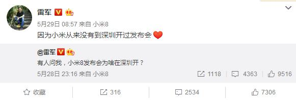
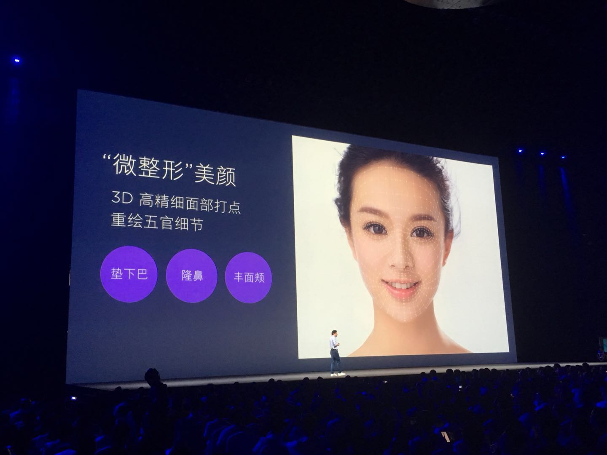

为什么放在深圳?
小米掌门人雷军在会上开玩笑说：“因为友商在这里。奋斗八年之后，我们再为友商做一场发布会，介绍我们的成果
多项“全球首发”黑科技，“微整形”美颜自拍
本次发布会共推出三款手机，分别是新一代旗舰手机小米8，小米8探索版和小米8 SE。由于今年恰逢小米8周年，因此产品型号跳过数字7直接来到了第8代。可以说小米8的拍照部分是本次小米发布会雷军介绍最多的部分，采用与小米MIX2S相同的相机模组，均为1200万变焦双摄。此次小米8还在前置镜头中加入了“微整形”美颜自拍模式。大致上是通过3D高精细面部打点的方式重绘无关细节，来实现诸如垫下巴、隆鼻和丰面颊等“微整形”效果。
